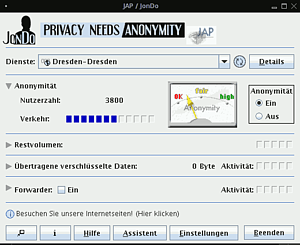

Jondo
Dieser Artikel wurde für die folgenden Ubuntu-Versionen getestet:
Ubuntu 16.04 Xenial Xerus
Ubuntu 14.04 Trusty Tahr
Zum Verständnis dieses Artikels sind folgende Seiten hilfreich:
JonDo  ist ein plattformübergreifender Anonymiser und der Nachfolger von JAP. Es handelt sich dabei um ein ursprünglich von der Technischen Universität Dresden ins Leben gerufenes Projekt, welches nun von der JonDos GmbH fortgesetzt wird. Die Universität Dresden unterstützt das Projekt jedoch weiterhin mit dem kostenlosen Server AN.ON . Im Gegensatz zu JAP, welches komplett kostenlos war, gibt es bei JonDo nun sowohl kostenlose wie auch kostenpflichtige Services.
ist ein plattformübergreifender Anonymiser und der Nachfolger von JAP. Es handelt sich dabei um ein ursprünglich von der Technischen Universität Dresden ins Leben gerufenes Projekt, welches nun von der JonDos GmbH fortgesetzt wird. Die Universität Dresden unterstützt das Projekt jedoch weiterhin mit dem kostenlosen Server AN.ON . Im Gegensatz zu JAP, welches komplett kostenlos war, gibt es bei JonDo nun sowohl kostenlose wie auch kostenpflichtige Services.
JonDo anonymisiert den Internetverkehr, indem es ihn über ein oder mehrere Server (Mixe) verschlüsselt weiterleitet. Der Server, mit dem man letztendlich kommuniziert, sieht so nur die JonDo-Server und nicht die eigene IP. Derzeit unterstützt JonDo nur HTTP-/HTTPS-Verkehr. Socks5-Funktionalität ist jedoch technisch möglich und es existiert bereits ein Test-Mix, der diese integriert hat.
Bevor man JonDo benutzt, sollte man sich zuerst den Grundlagenartikel zum anonymen Surfen durchlesen, um den Gefahren für die Anonymität, beim Surfen mit JonDo aus dem Weg zu gehen.
Installation¶
Voraussetzungen¶
Da JonDo auf Java basiert, muss man sich erst die Laufzeitumgebung (JRE) installieren. JonDo ist kompatibel mit OpenJDK 6 und Oracle Java. Die Installation von Java und JRE ist im Java/Installation-Artikel erklärt. Außerdem benötigt das Paket jondo_all.deb zusätzlich das folgende Paket:
java-wrappers
 mit apturl
mit apturl
Paketliste zum Kopieren:
sudo apt-get install java-wrappers
sudo aptitude install java-wrappers
Manuelle Installation¶
Auf der Webseite  stehen mehrere Möglichkeiten zum Download bereit:
stehen mehrere Möglichkeiten zum Download bereit:
jondo_all.deb ist ein Debian/Ubuntu Paket
jondo_linux.tar.bz2 ist ein Archiv, das für alle Linux/UNIX Distributionen nutzbar ist
JAP.jar ist die Java-Applikation ohne Install-Routine
Wenn man das Debian/Ubuntu Paket oder das Linux-Archiv nutzt, wird das Programm auch für die permanente Nutzung eingerichtet. Es wird ein Menüeintrag für den Start von JonDo in der Programmgruppe Internet eingerichtet. Alternativ kann man JonDo im Terminal mit dem folgenden Kommando starten:
jondo
Verwendet man nur die Java-Applikation JAP.jar, muss man diese Einrichtung selbst vornehmen.
Hinweis!
Fremdsoftware kann das System gefährden.
Die Java-Applikation JAP.jar startet man vom Terminal [1] aus mit dem Befehl:
java -jar JAP.jar
starten und benutzen.
Für permanente Nutzung einrichten¶
Will man JAP permanent benutzen, bietet es sich an, die Datei in einen entsprechenden Ordner zu verschieben und ein Bash-Skript zu erstellen, welches JAP ausführt. Dazu öffnet man ein Terminal [1] und gibt folgende Befehle ein:
sudo mkdir /opt/JAP #erstellt den Ordner JAP sudo mv /PFAD/ZUR/HERUNTERGELADENEN/JAP.jar /opt/JAP/ #verschiebt die Datei in den Ordner JAP
Danach öffnet man einen Editor mit Root-Rechten [2] und gibt folgenden Inhalt ein:
#!/bin/bash java -jar /opt/JAP/JAP.jar
Diese Datei speichert man im Verzeichnis /usr/local/bin zum Beispiel unter dem Namen jondo ab und macht sie abschließend noch ausführbar [3]. Ab jetzt kann man JonDo vom Terminal [1] aus jederzeit über den Befehl:
jondo
starten.
Fremdquelle¶
Um aus der Fremdquelle zu installieren, muss man die folgenden Paketquellen freischalten:
Hinweis!
Zusätzliche Fremdquellen können das System gefährden.
deb http://debian.anonymous-proxy-servers.net VERSION main
Um die Fremdquelle zu authentifizieren, kann man
entweder den Signierungsschlüssel herunterladen und in der Paketverwaltung hinzufügen oder folgenden Befehl ausführen:
wget -q https://anonymous-proxy-servers.net/downloads/JonDos_GmbH.asc -O- | sudo apt-key add -
Jetzt kann man JonDo durch die Pakete:
jondo
jondofox-de
mit apturl
Paketliste zum Kopieren:
sudo apt-get install jondo jondofox-de
sudo aptitude install jondo jondofox-de
installieren und entweder über "Anwendungen -> Internet -> JonDo" oder aus dem Terminal [1] heraus mit dem Befehl:
jondo
starten.
Benutzung¶
 Nach Programmstart muss erst ein Häkchen unter dem Punkt "Anonymität" bei "ein" gesetzt werden, damit JonDo die Anfragen über die Mixkaskaden leitet. Des Weiteren hat man neben der Überschrift "Dienste" ein Dropdown-Menü, in dem man die zu verwenden Kaskaden auswählen kann. Die Auswahl gliedert sich in drei Punkte:
Kostenpflichtige Mixkaskaden: Um eine dieser Kaskaden wählen zu können, muss man zuvor ein Konto eingerichtet und Geld gezahlt haben. Danach wird die Verbindung immer über 3 Kaskaden geleitet bis sie zum eigentlichen Server gelangen und man hat ein hohes Maß an Anonymität. Nur die kostenpflichtigen Kaskaden bieten Unterstützung für SOCKS-Proxys. Außerdem sind sie bis zu 20x schneller, als die kostenfreien Kaskaden.
Kostenfreie Mixkaskaden: Bieten das gleiche wie kostenpflichtige sind aber meist etwas überlaufen und deutlich langsamer. Die Geschwindigkeit ist auf 30-50 kb/s gedrosselt. Zur Zeit stehen 5 kostenfreie Kaskaden zur Verfügung.
einzelne Mixkaskaden: Bei einzelnen Mixkaskaden wird der Traffic nicht über 3 sondern nur eine einzige Kaskade geschickt. Die Anonymität ist dadurch nicht so hoch und ein einziger kompromittierter Server bzw. ein Serverbetreiber, der mit der Polizei oder dem Staat kooperiert (wie es die Mixkaskade Dresden in der Vergangenheit bereits getan hat), kann die Anonymität komplett aufheben. Dafür sind die einzelnen Mixkaskaden alle ebenfalls kostenlos.
Browserkonfiguration¶
Standardmäßig lauscht JonDo auf Port 4001. Damit das Programm auch funktioniert, muss in dem genutzten Browser noch die Proxy-Einstellung geändert werden. Dazu öffnet man den Browser und nimmt die unten beschriebenen Einstellungen vor:
JonDoFox¶
JonDoFox kann optional aus der Fremdquelle installiert werden. Außerdem steht er als Paket für Debian/Ubuntu und als .tar-Archiv für alle Linux/UNIX-Distributionen auf der Webseite zum Download zur Verfügung.
Es wird ein zusätzliches Profil im Firefox-Webbrowser angelegt, welches verbesserte Sicherheitseinstellungen besitzt. Die voreingestellte Browserkonfiguration ist schon auf JonDo optimiert. Das Programm kann über Anwendungen -> Internet -> JonDoFox gestartet werden.
Firefox¶
"Bearbeiten -> Einstellungen -> Allgemein -> Verbindungs-Einstellungen -> Manuelle Konfiguration -> Für alle Protokolle diesen Proxy verwenden" anhaken. Nun als Host localhost und als Port 4001 eingeben.
Konqueror¶
"Einstellungen -> Konqueror einrichten -> Proxyserver -> Proxy-Einstellungen manuell vornehmen -> Einrichtung -> Für alle Protokolle den selben Proxyserver verwenden". Nun unter "HTTP:" als Serveradresse localhost sowie den Port 4001 eintragen.
Opera¶
"Extras -> Einstellungen -> Erweitert -> Netzwerk -> Proxyserver". Nun die gewünschten Protokolle auswählen und den Host localhost sowie den Port 4001 eingeben.
Hinweis:
Falls nicht mehr anonym gesurft werden möchte, müssen diese Einstellungen wieder rückgängig bzw. deaktiviert werden. Für die meisten Browser gibt es dazu Hotkeys bzw. Plugins, die dies vereinfachen.
Einstellungen¶
Unter "Einstellungen" gelangt man zu weiteren Einstellungsoptionen:
Erscheinungsbild¶
Hier sollte man als erstes einen Haken bei "Erweiterte Ansicht" machen und danach auf "Übernehmen" klicken, um Zugang zu sämtlichen Einstellungsmöglichkeiten zu erhalten. Außerdem lassen sich hier noch die Sprache und das Aussehen von JonDo anpassen. Die Option zum Minimieren in die Systray ist zwar bereits in diesem Menü vorhanden, jedoch noch nicht implementiert und lässt sich nicht anwählen.
Bezahlung¶
Unter "Bezahlung" kann man ein Konto einrichten und verwalten, wenn man die kostenpflichtigen Mixkaskaden von JonDo nutzen möchte.
Update¶
"Update" erlaubt einem einzustellen ob man über neue stable oder beta Versionen informiert werden will und ob das Update anonymisiert oder nicht-anonymisiert heruntergeladen werden soll.
Netzwerk¶
Wird dem Rechner der direkte Zugang zum JonDo-Netzwerk verboten, kann man hier einstellen, dass man andere JonDo-Nutzer zum Forwarden benutzen möchte. Außerdem kann man an dieser Stelle den Port umstellen, an dem JonDo lauscht und die Daten eines Zwangsproxy eingeben, falls man gezwungen ist, einen zu nutzen.
Anonymität¶
InfoService¶
Hier lassen sich Server eintragen und löschen, über die JonDo seine Informationen über die vorhandenen und nutzbaren Mixkaskaden erhält. Unter dem Raster "Erweiterte Einstellungen" lässt sich zusäztlich konfigurieren, ob diese Abfragen anonym oder nicht anonym erfolgen sollen.
Dienste¶
Zusätzlich zum Hauptscreen sind unter diesem Punkt nochmals die vorhandenen Mixkaskaden gelistet. In dem Raster "Erweiterte Einstellungen" findet man weitere Funktionen wie das Verschicken von Dummytraffic und Autoreconnect zu einer Mixkaskade, wenn die Verbindung verloren geht.
Forwarding-Server¶
Wenn man seinen PC als Forwarding-Server einrichtet, ermöglicht man Benutzern, deren Provider oder Regierung den Zugang zum JonDo-Netzwerk blockieren, über den eigenen Rechner das Netzwerk dennoch zu erreichen. Den Port, den man dazu einträgt, muss man im Router bzw. der Firewall zuvor freigeben (siehe Portweiterleitung).
Zertifikatstellen¶
Die hier angegeben Server überprüfen die Zertifikate der einzelnen Kaskaden. Man sollte an diesen Einstellungen nicht herumspielen, wenn man nicht genau weiß, was man tut, da dadurch die Integrität von JonDo gefährdet werden könnte.
Links¶
JonDos GmbH
- offizielle Firmenseite von JonDo JonDo-Forum
- offizielles Support-forum für JonDo AN.ON
- Projekt Seite der TU Dresden
- Erstellt mit Inyoka
-
 2004 – 2017 ubuntuusers.de • Einige Rechte vorbehalten
2004 – 2017 ubuntuusers.de • Einige Rechte vorbehalten
Lizenz • Kontakt • Datenschutz • Impressum • Serverstatus -
Serverhousing gespendet von